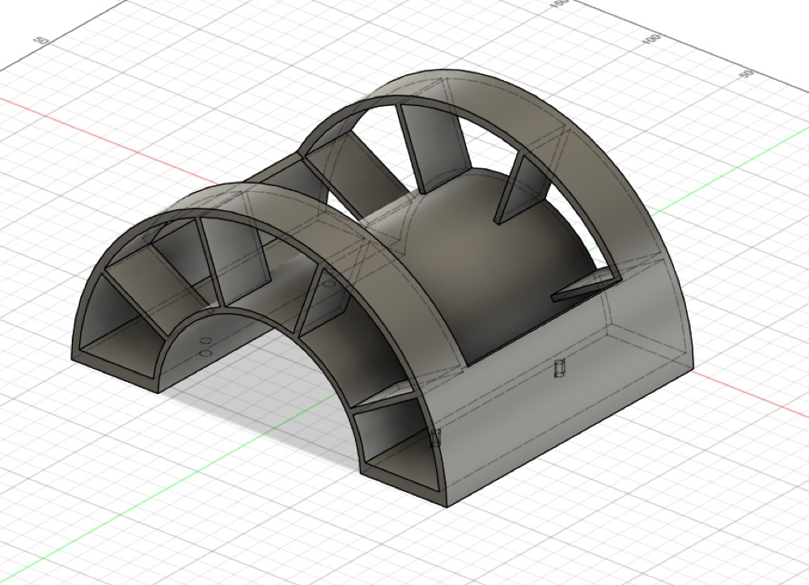

Blog · Nov 2026 · 4 min read
Before you sketch: six design factors that make a prototype useful.
A prototype is a question you can hold in your hands. If you don’t know the question, you end up with a nice object and no answer.
My own example is the Smart Pole Interaction Unit, a pole that tells pedestrians when it is safe to cross. It went from CAD models, to a 3D-printed ring, to a working pole tested on a real street. Each step was a different kind of prototype. These are the six things I would settle before drawing anything.
First: sketch or prototype?
Bill Buxton makes a useful distinction in Sketching User Experiences (2007). Sketches are quick, cheap, disposable and plentiful: you make many to explore and suggest. Prototypes are more deliberate: you make them to describe, test and refine one idea. Both are design, but they answer different kinds of questions. Early on, draw ten sketches rather than build one prototype.
Stephanie Houde and Charles Hill asked a sharper question in What Do Prototypes Prototype? (1997). A prototype can explore what an idea does for someone (its role), how it looks and feels, or how it could be built (implementation). Knowing which corner you are in tells you what you can safely leave out.
1. Who, and where
Design for the moment of use, not for your desk. Who is there, what are they carrying, what is the light, the noise, the hurry? A pedestrian at night, in rain, holding a phone, is a different user from the same person in a lab chair.
Ask yourself: where exactly will this be used, and what is the worst realistic version of that moment?
2. One question per prototype
Write the question on the prototype before you build it. “Can people read it from 10 metres in daylight?” is a question a cardboard box can answer in an afternoon. “Is it a good design?” is not a question any prototype can answer.
Ask yourself: what will I decide differently depending on the answer?
3. Choose the fidelity on purpose
Every step up costs more time and makes you less willing to throw the thing away. Stay as low as the question allows. Looks and wording can be tested on paper; whether a display is readable in sunlight cannot.
The smart pole climbed this ladder one step at a time:


Ask yourself: what is the cheapest thing that could still give a trustworthy answer?
4. What does it signal, and to whom?
Interfaces in public space talk to many people at once, from many angles, often at a glance. Decide the one message, who it is for, and whether it can be read from the side, from behind, by someone with low vision, or by someone who doesn’t share your language.
Ask yourself: if someone glances at it for one second, what will they believe?
5. Constraints are design material
Size, power, weather, cost, safety and accessibility are not obstacles to deal with later. They shape the idea from the start. A beautiful display that dies in summer heat, or that a wheelchair user can’t see, is not a finished design.
Ask yourself: which constraint, if I ignore it now, will force a redesign later?
6. Decide how you will know it works
Before building, decide what you will watch and measure: time to decide, mistakes, hesitation, confidence, what people say afterwards. If you can’t say what a good result looks like, the prototype isn’t ready to be built yet.
Ask yourself: what result would make me change the design?
Before you build: a one-page check
tick them off as you go: nothing is saved or sent anywhere.
Further reading: Bill Buxton, Sketching User Experiences: Getting the Design Right and the Right Design (Morgan Kaufmann, 2007). Stephanie Houde and Charles Hill, “What Do Prototypes Prototype?”, in Handbook of Human-Computer Interaction (2nd ed., 1997).